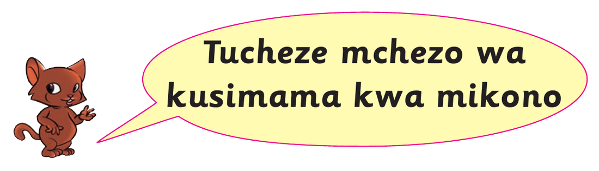
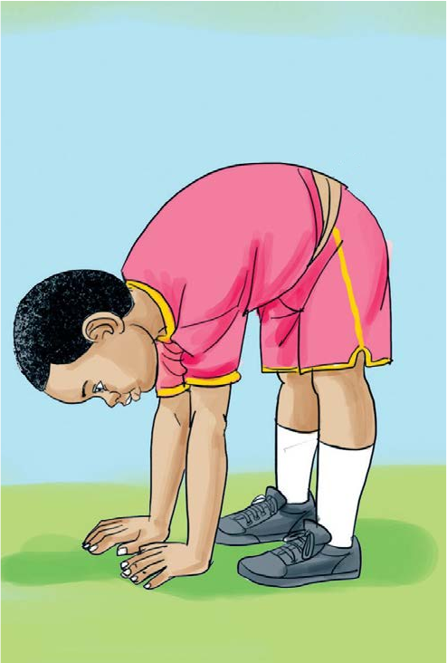

Tucheze mchezo wa kusimama kwa mikono

Tucheze mchezo wa kusimama kwa mikonoHatua za kufuata
1. Simama wima.
 Mwanafunzi amesimama wima, miguu ikiwa imeungana na mikono ikiwa pembeni.
Mwanafunzi amesimama wima, miguu ikiwa imeungana na mikono ikiwa pembeni.2. Inama na kushika chini.

Mwanafunzi ameinama mbele hadi mikono yote miwili iguse chini.3. Jisukume na kuegesha miguu ukutani.
4. Ondoa miguu ukutani na simama kwa mikono tu.
 Mwanafunzi ameegemeza uzito kwa mikono yote miwili na amenyoosha miguu juu.
Mwanafunzi ameegemeza uzito kwa mikono yote miwili na amenyoosha miguu juu.Rudia hatua hizo.
Shughuli ya kufanya 8
Shughuli ya kufanya ya naneShirikiana na wenzako kufanya zoezi la kusimama kwa mikono.
81